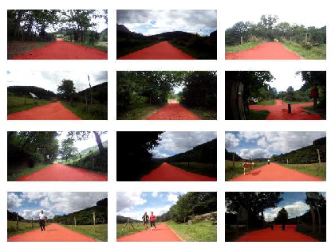

Unstructured Road Dataset
Structured Road scenes are useful for evaluating the performance of an algorithm in urban-scenes. This is highly useful for the application of autonomous and assisted driving. However, an algorithm or a system trained on structured data might not perform so well in unstructured scenarios. Unstructured scenarios are common for robots or off-road driving, where roads are predominantly non-asphalt. In addition, urban roads often have lane markings which can be used for automated assistance, but landscape roads do not. Furthermore, there are different constraints for driving/navigation in unstructured scenarios - Sidewalks may not be present, a goat path may intersect with an asphalt road, there could be water or small obstacles on the path.

To evaluate against unstructured environments, we introduce a new dataset - Bilbao Raw. At the time of writing, there is only one other unstructured dataset available - Freiburg Raw. We nevertheless introduce another unstructured dataset to further community efforts. Bilbao Raw is a sequence of images in an unstructured, non-asphalt road environment, obtained in the country side of Basque Country.
Dataset Properties
| Camera Type | GoPro |
| Resolution | 720 x 360 |
| Ambient Conditions | Outdoors; Indirect and Direct sunlight |
| Number of Images | 1000, all annotated |
| Type of Annotation | Pixel wise for road regions |
| Location of Capture | Pais Basco(Basque Country) |
| Number of sequences | 1 |
Citation
If you use the dataset, please cite using the following bibtex
@misc{https://doi.org/10.48550/arxiv.2207.11523,
doi = {10.48550/ARXIV.2207.11523},
url = {https://arxiv.org/abs/2207.11523},
author = {Ravishankar, Prassanna Ganesh and Lopez, Antonio M. and Sanchez, Gemma M.},
keywords = {Computer Vision and Pattern Recognition (cs.CV), FOS: Computer and information sciences, FOS: Computer and information sciences},
title = {Unstructured Road Segmentation using Hypercolumn based Random Forests of Local experts},
publisher = {arXiv},
year = {2022},
copyright = {Creative Commons Attribution 4.0 International}
}